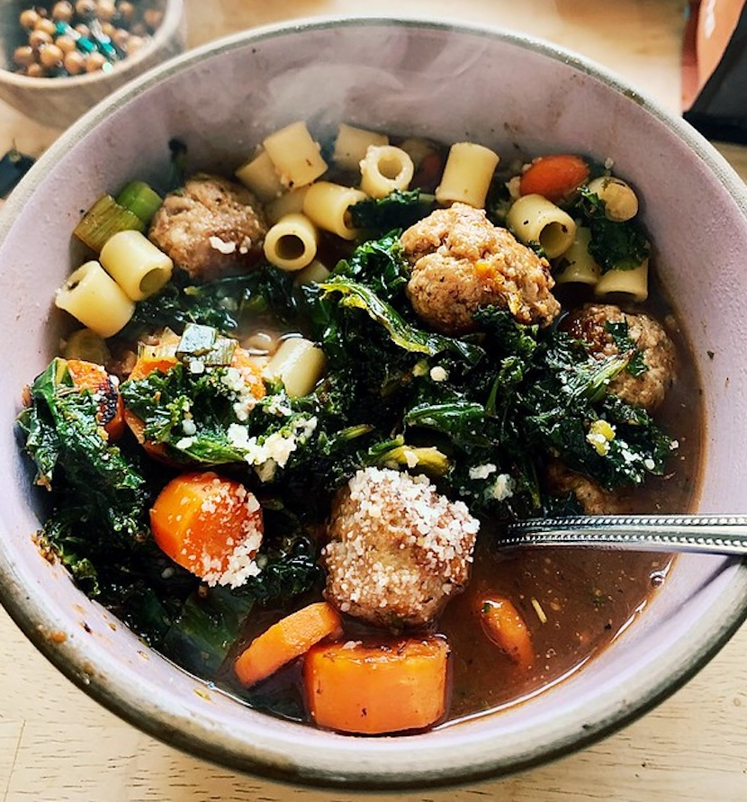

Photo taken by Dana L. Brown, can be found here
Jump to recipe
Info/Non Traumatic Backstory
No seriously it's not traumatic. But you should see my other
recipe
Why is it called wedding soup? This recipe is traditonally Italian, and even though it's called wedding soup, it usually does't have anything to do with weddings. It comes from mistranslating "marriage soup" to "wedding soup", when marriage in this case was refering to the "marriage" of many different ingrediants, not a literal wedding. I think some people do have it at weddings though.
Every other year, for Christmas, my family drives 7 hours to my Grandparents house so we can spend winter break with them and my cousins. I remember that my grandma would always make wedding soup for us, using her and I would be happy to have it after so many hours in the car. She used a recipe that had been with her famly for many generations, and I'll do my best to cover that recipe here.
"It's edible if you're hungry enough"
- My Dad
I still don't believe that this could be our ranger's favorite. One of my biggest regrets is not asking him when we saw him after the trek if SPAM was actually his favorite, or if he was just lying to make us feel better about having to eat it. I guess I'll never know.
Tips, Tricks and Substitutions
I'm gonna be honest I don't have much for you because this recipe is very simple. I'll still try.
- Use Cholula hot sauce for the most accurate
taste!
- This was actually the first time I've ever had Cholula hot sauce, so now every time I have it, SPAM is the only thing I can think of!
- Make sure you use the SPAM singles! The SPAM blocks
from a can aren't the same!
- I don't actually know if this is true because I've never had the SPAM block from a can, but my logic is that it works the same way as brownies. The middle and edge peices of a brownie are different, so maybe that's the same with SPAM. The single SPAM would be like an all edge brownie.

Image by Mike Mozart, can be found
here
Image from my friend's dad, taken at Philmont
Recipe
Preperation time: 1 minute
Servings: 1
Ingredients
Amount
SPAM single classic
1 package
Cholula hot sauce
2 teaspoons